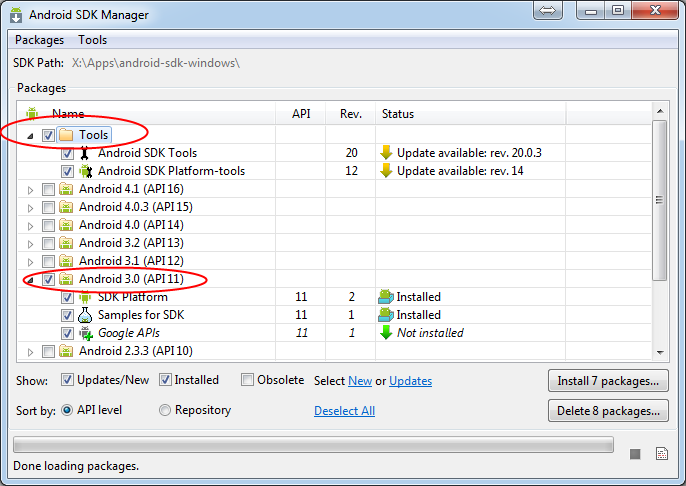
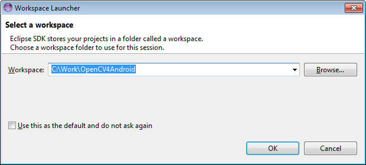
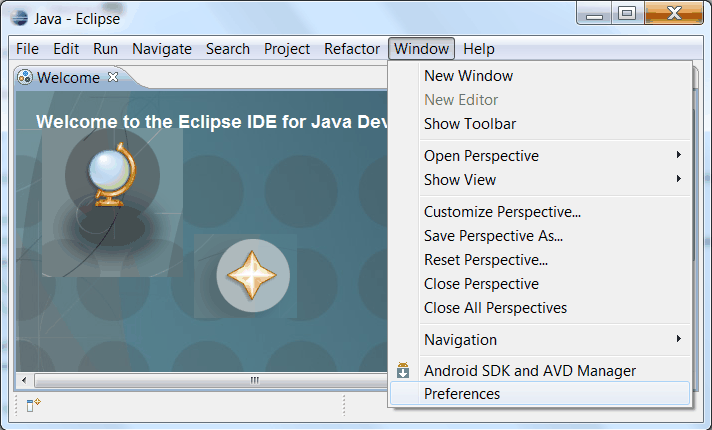
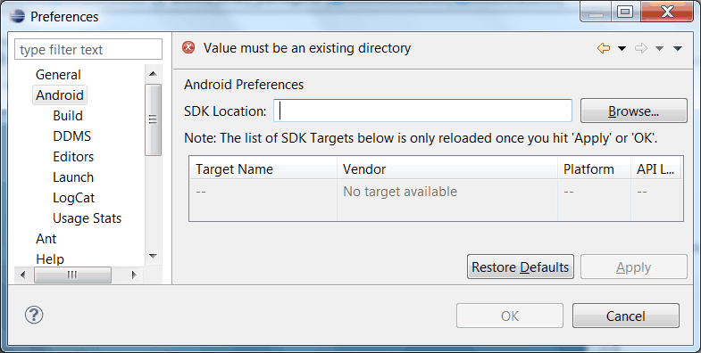
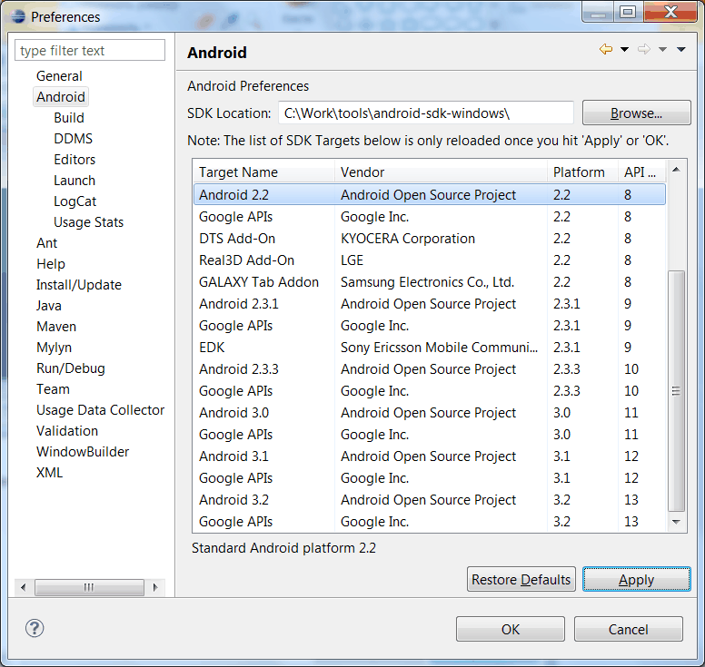
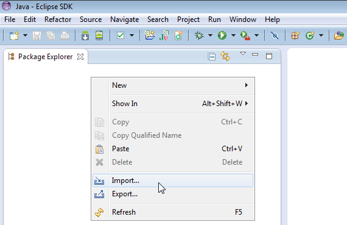
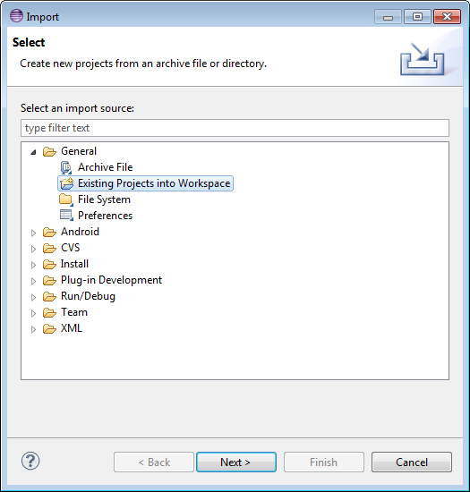
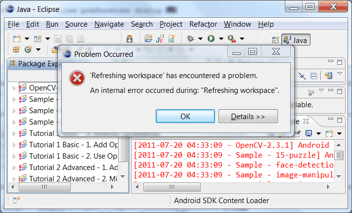
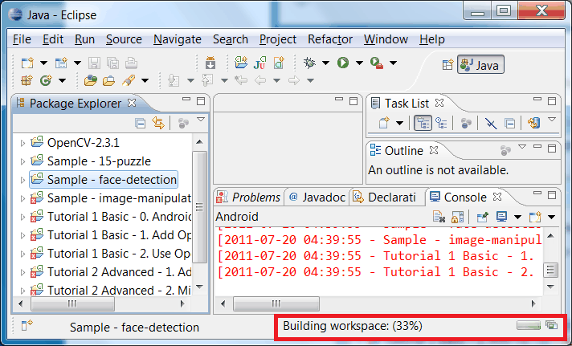
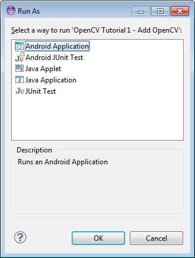

Using Android binary package with Eclipse¶
This tutorial was tested using Ubuntu 10.04 and Windows 7 SP1 operating systems. Nevertheless, it should also work on any other OSes supported by Android SDK (including Mac OS X). If you encounter errors after following the steps described here, feel free to contact us via android-opencv discussion group https://groups.google.com/group/android-opencv/ and we will try to help you.
Quick environment setup for Android development¶
If you are making a clean environment installation then you can try Tegra Android Development Pack (TADP) released by NVIDIA:
It will cover all of the environment set up automatically and you can go to the next step Get the OpenCV package for Android development right after automatic setup.
If you are a beginner in Android development then we recommentd you to start with TADP.
Note
NVIDIA‘s Tegra Android Development Pack includes some special features for NVIDIA’s Tegra platform but it is not just for Tegra devices
- You need at least 1.6 Gb free disk space for installation.
- TADP will download Android SDK platforms and Android NDK from Google’s server, so you need an Internet connection for the installation.
- TADP can ask you to flash your development kit at the end of installation process. Just skip this step if you have no Tegra Ventana Development Kit.
- (UNIX) TADP will ask you for a root in the middle of installation, so you need to be a member of sudo group.
Manual environment setup for Android Development¶
You need the following tools to be installed:
Sun JDK 6
Visit http://www.oracle.com/technetwork/java/javase/downloads/index.html and download installer for your OS.
Here is a detailed JDK installation guide for Ubuntu and Mac OS: http://source.android.com/source/initializing.html#installing-the-jdk (only JDK sections are applicable for OpenCV)
Note
OpenJDK is not usable for Android development because Android SDK supports only Sun JDK. If you use Ubuntu, after installation of Sun JDK you should run the following command to set Sun java environment:
sudo update-java-alternatives --set java-6-sun
Android SDK
Get the latest Android SDK from http://developer.android.com/sdk/index.html
Here is Google’s install guide for SDK http://developer.android.com/sdk/installing.html
Note
If you choose SDK packed into Windows installer, then you should have 32-bit JRE installed. It is not needed for Android development, but installer is x86 application and requires 32-bit Java runtime.
Note
If you are running x64 version of Ubuntu Linux, then you need ia32 shared libraries for use on amd64 and ia64 systems to be installed. You can install them with the following command:
sudo apt-get install ia32-libs
For Red Hat based systems the following command might be helpful:
sudo yum install libXtst.i386
Android SDK components
You need the following SDK components to be installed:
Android SDK Tools, revision12 or newer
Older revisions should also work, but they are not recommended.
SDK Platform Android 2.2, API 8, revision 2 (also known as android-8)
This is minimal platform supported by OpenCV Java API. And it is set as default for OpenCV distribution. It is possible to use newer platform with OpenCV package, but it requires to edit OpenCV project settings.
See Adding SDK Components for help with installing/updating SDK components.
Eclipse IDE
Check the Android SDK System Requirements document for a list of Eclipse versions that are compatible with the Android SDK. For OpenCV 2.4.0 we recommend Eclipse 3.6 (Helios) or later versions. They work well for OpenCV under both Windows and Linux.
If you have no Eclipse installed, you can download it from this location:
ADT plugin for Eclipse
This instruction is copied from http://developer.android.com/sdk/eclipse-adt.html#downloading . Please, visit that page if you have any troubles with ADT plugin installation.
Assuming that you have Eclipse IDE installed, as described above, follow these steps to download and install the ADT plugin:
Start Eclipse, then select Help ‣ Install New Software...
Click Add (in the top-right corner).
In the Add Repository dialog that appears, enter “ADT Plugin” for the Name and the following URL for the Location:
Click OK
Note
If you have trouble acquiring the plugin, try using “http” in the Location URL, instead of “https” (https is preferred for security reasons).
In the Available Software dialog, select the checkbox next to Developer Tools and click Next.
In the next window, you’ll see a list of the tools to be downloaded. Click Next.
Read and accept the license agreements, then click Finish.
Note
If you get a security warning saying that the authenticity or validity of the software can’t be established, click OK.
When the installation completes, restart Eclipse.
Get the OpenCV package for Android development¶
Go to the http://sourceforge.net/projects/opencvlibrary/files/opencv-android/ and download the latest available version. Currently it is OpenCV-2.4.0-android-bin.tar.bz2
Create new folder for Android+OpenCV development.
Note
Better to use a path without spaces in it. Otherwise you will probably have problems with ndk-build.
Unpack the OpenCV package into that dir.
You can unpack it using any popular archiver (for example with 7-Zip):

On Unix you can also use the following command:
tar -jxvf ~/Downloads/OpenCV-2.4.0-android-bin.tar.bz2
For this tutorial I have unpacked OpenCV to the C:\Work\android-opencv\ directory.
Open OpenCV library and samples in Eclipse¶
Start the Eclipse and choose your workspace location.
I recommend to start familiarizing yourself with OpenCV for Android from a new clean workspace. So I have chosen my OpenCV package directory for the new workspace:
Configure your ADT plugin
Important
ADT plugin settings are workspace-dependent. So you have to repeat this step each time when you create a new workspace.
Once you have created a new workspace, you have to point the ADT plugin to the Android SDK directory. This setting is stored in workspace metadata, as result this step is required each time when you are creating new workspace for Android development. See Configuring the ADT Plugin document for the original instructions from Google.
Select Window ‣ Preferences... to open the Preferences panel (Mac OS X: Eclipse ‣ Preferences):
Select Android from the left panel.
You may see a dialog asking whether you want to send usage statistics to Google. If so, make your choice and click Proceed. You cannot continue with this procedure until you click Proceed.
For the SDK Location in the main panel, click Browse... and locate your Android SDK directory.
Click Apply button at the bottom right corner of main panel:
Click OK to close preferences dialog.
Import OpenCV and samples into workspace.
OpenCV library is packed as a ready-for-use Android Library Project. You can simply reference it in your projects.
Each sample included into OpenCV-2.4.0-android-bin.tar.bz2 is a regular Android project that already references OpenCV library. Follow next steps to import OpenCV and samples into workspace:
Right click on the Package Explorer window and choose Import... option from the context menu:
In the main panel select General ‣ Existing Projects into Workspace and press Next button:
For the Select root directory in the main panel locate your OpenCV package folder. (If you have created workspace in the package directory, then just click Browse... button and instantly close directory choosing dialog with OK button!) Eclipse should automatically locate OpenCV library and samples:

Click Finish button to complete the import operation.
After clicking Finish button Eclipse will load all selected projects into workspace. And... will indicate numerous errors:
However all these errors are only false-alarms!
To help Eclipse to understand that there are no any errors choose OpenCV library in Package Explorer (left mouse click) and press F5 button on your keyboard. Then choose any sample (except first samples in Tutorial Base and Tutorial Advanced) and also press F5.
After this manipulation Eclipse will rebuild your workspace and error icons will disappear one after another:
Once Eclipse completes build you will have the clean workspace without any build errors:

Note
If you are importing only OpenCV library without samples then instead of second refresh command (F5) you might need to make Android Tools ‣ Fix Project Properties from project context menu.
Running OpenCV Samples¶
At this point you should be able to build and run all samples except two from Advanced tutorial (these samples require Android NDK to build working applications, see the next tutorial Using C++ OpenCV code with Android binary package to learn how to compile them).
Also I want to note that only Tutorial 1 Basic - 0. Android Camera and Tutorial 1 Basic - 1. Add OpenCV samples are able to run on Emulator from Android SDK. Other samples are using OpenCV Native Camera which does not work with emulator.
Note
Latest Android SDK tools, revision 12 can run ARM v7 OS images but Google does not provide such images with SDK.
Well, running samples from Eclipse is very simple:
Connect your device with adb tool from Android SDK or create Emulator with camera support.
- See Managing Virtual Devices document for help with Android Emulator.
- See Using Hardware Devices for help with real devices (not emulators).
Select project you want to start in Package Explorer:guilabel: and just press Ctrl + F11 or select option Run ‣ Run from main menu, or click Run button on the toolbar.
Note
Android Emulator can take several minutes to start. So, please, be patient.
On the first run Eclipse will ask you how to run your application:
Select the Android Application option and click OK button. Eclipse will install and run the sample.
Here is Tutorial 1 Basic - 1. Add OpenCV sample detecting edges using Canny algorithm from OpenCV:

How to use OpenCV library project in your application¶
If you already have an Android application, you can add a reference to OpenCV and import all its functionality.
First of all you need to have both projects (your app and OpenCV) in a single workspace. So, open workspace with your application and import the OpenCV project into your workspace as stated above.
Add a reference to OpenCV project.
Do the right mouse click on your app in Package Explorer, go to Properties ‣ Android ‣ Library ‣ Add and choose the OpenCV library project.
Whats next?¶
Read the Using C++ OpenCV code with Android binary package tutorial to learn how add native OpenCV code to your Android project.
Help and Feedback
You did not find what you were looking for?- Ask a question in the user group/mailing list.
- If you think something is missing or wrong in the documentation, please file a bug report.